Operating Documentation
Direction 5440001-3, Rev# 6
Signa HDxt Service Methods
Module Version 1.0, Version Date 3/20/07
Operating Documentation |
The GE BrainWaveHW Lite Option consists of software and hardware that can be used in combination with third party hardware to present fMRI patient stimuli synchronized with MR scanning. This document describes the hardware installation for this option. The hardware consists of the BrainWave Cabinet located in the equipment room, the response system including response pads, and connecting cables.
Cable runs must be made from the magnet to the Penetration Panel, from the Penetration Panel to the BrainWave Cabinet, from the System Cabinet to the BrainWave Cabinet, and from the BrainWave Cabinet to the Control Room.
This manual describes installation of the following GEMS MR catalog options:
M1033BL - BrainWaveHW Lite Option
The BrainWave hardware is shipped as a partially assembled cabinet (BrainWave Cabinet) containing 6 cardboard boxes. The contents of the cabinet and the boxes are listed below.
Table 1: BrainWave Cabinet
| Component | Qty | GE P/N |
| [Cedrus] Lumina Response Controller Box | 1 | 2394034-6 |
| [Cedrus] AC Power module for Lumina response controller box. | 1 | 2394034-7 |
| 5 foot VGA Cable | 1 | n/a (part of 15” LCD Display 2363727) |
| AC Power Cable for 15” LCD Display | 1 | n/a (part of 15” LCD Display 2363727) |
| Stimulus Computer (PC) including AC power cord | 1 | 2303343-2 |
| Power strip | 1 | 2394034-11 |
Table 2: Box 1 LCD Display
| Component | Qty | GE P/N |
| 15” LCD Display (See Illustration 1) | 1 | 2363727 |
Illustration 1: Box 1
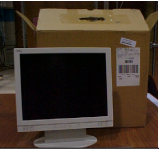
Table 3: Box 2 Shielded Cable
| Component | Qty | GE P/N |
| Shielded Cable (65’ (30m)) to be used inside of the magnet room (penetration sub-panel to OTEC unit). See Illustration 2. | 1 | Part of 2394034-9 cable kit |
Illustration 2: Box 2
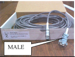
Table 4: Box 3 Shielded Cable
| Component | Qty | Avotec P/N | GE P/N |
| Shielded Cable (65’ (30m)) for use outside of the magnet room (penetration sub-panel to Cedrus Lumina Response Pad in the BrainWave Cabinet). See Illustration 3. | 1 | 758620 | Part of 2394034-9 cable kit |
Illustration 3: Box 3

Table 5: Box 4 Response Pads, Fiber Cables, OTEC Unit
| Component | Qty | GE P/N |
| R/L Response Pads/Fiber Optic Cable/OTEC Unit Assembly to be used inside the magnet room. (See Illustration 4) | 1 | 2394034-5 |
Illustration 4: Box 4
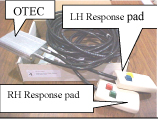
Table 6: Box 5 PC Compatible Keyboard
| Component | Qty | GE P/N |
| PC Compatible Keyboard to be used with the Stimulus PC in the BrainWave Cabinet. (See Illustration 5) | 1 | 2394034-16 |
Illustration 5: Box 5

Table 7: Box 6 Sub-Panel and Other Components
| Component | Qty | GE P/N |
| Bulkhead Threaded Clips | 2 | 46-265067P1 |
| Y-trigger Cable | 1 | 2394034-8 |
| Penetration Sub-Panel Assembly | 1 | 2394034-10 |
| PC Compatible Mouse | 1 | 2394034-17 |
| Network Cable (75’) | 1 | 2394034-18 |
| Adhesive mount folder | 1 | N/A |
| Software key (MOD) | 1 | 5110736 |
| Documentation | N/A | |
| Headphones | 1 | N/A |
Illustration 6: Box 6

#2 Flat head Screwdriver
#2 Phillips Screwdriver
Utility Knife
Install BrainWaveHW Lite Cabinet
Install Custom Ramp Port Sub-panel
Install Equipment Room Cables, Patient Response Pads, and OTEC unit
Route response system fiber optic cable from Penetration Panel to BrainWaveHW Lite Cabinet.
Install trigger cable assembly in System Cabinet.
Connect sub-D and power cable from the BrainWaveHW Lite Cabinet to the System Cabinet.
Summary: The cabinet must be installed in the equipment room and close to the System Cabinet. The BrainWaveHW Lite option’s power and trigger comes from the System Cabinet.
Locate BrainWaveHW Lite Cabinet. Standard lengths (15 feet) of power strip cord and sub-D cable from BrainWaveHW Lite Cabinet to System Cabinet should be considered, as well as customer preference.
Level the BrainWaveHW Lite Cabinet.
Open and verify the contents of boxes 1 through 6.
Illustration 7: BrainWaveHW Lite Cabinet
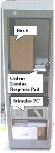
Unpack the LCD monitor (2363727) from Box 1.
Find the monitor brackets installed in the BrainWaveHW Lite Cabinet (see Illustration 8). Loosen 1 screw in the left monitor bracket and remove the other 3 screws. Rotate this bracket away from the center of the cabinet.
Loosen the screws in the right monitor bracket, and slide the monitor base under the right monitor bracket.
Rotate the left monitor bracket over the base of the monitor. Reinstall the 3 screws removed in step 2, and then tighten all screws on the left and right monitor brackets (see Illustration 9).
Install the DC power cable and the VGA cable into the monitor. These cables are loosely tiewrapped to the monitor shelf. Make sure that the VGA cable is plugged into the expansion slot (NOT the VGA connector). Note that the other end of this VGA cable may be connected to the rear of the computer now for installation testing, but will typically be connected to 3rd party video equipment after the 3rd party equipment is added to the cabinet (see Illustration 10).
Illustration 8: Monitor brackets
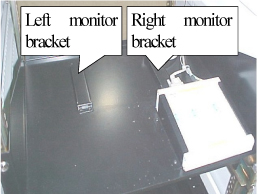
Illustration 9: Monitor brackets - with monitor installed
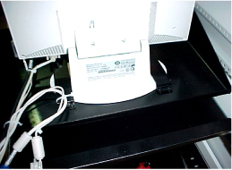
Illustration 10: Monitor DC Power Cable and VGA Cable
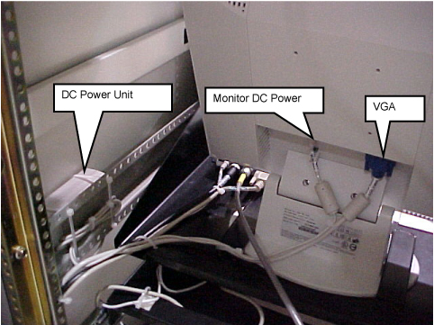
Remove tape at front of BrainWave Cabinet restraining slide-out shelf.
Unpack keyboard and mouse from Box 6 and place on slide out shelf (see Illustration 11).
Route keyboard and mouse cables straight back and down to computer.
Plug keyboard and mouse connector into PC.
Route excess cable down LHS of cabinet. Loosely tie-wrap the cables away from the shelf slides to prevent the cables from being damaged. Insure that there is enough slack in the cables to allow the shelf to slide out all the way.
Illustration 11: Keyboard and mouse on slide out shelf

Insure that the AC plugs for the Stimulus PC and the Monitor are inserted into the AC Power Strip at the bottom of the BrainWaveHW Lite Cabinet (see Illustration 12). The transformer/plug for the Cedrus Lumina (Response System) Controller is already tie-wrapped to the AC Power Strip. Note that there are 3 outlets in the AC Power Strip which may be used to supply power to 3rd party equipment. These 3 outlets provide 115V at 50 or 60 Hz, and can provide up to a total current of 7 Amps RMS.
Illustration 12: AC Power Strip
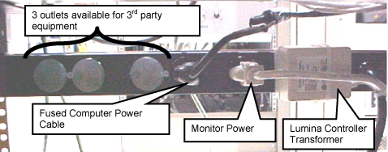
Summary: The original ramp port sub-panel must be removed and replaced with the custom ramp port to allow cabling into the magnet room.
| ||||
| FATAL ELECTRIC SHOCK HAZARD!! | ||||
| TO PREVENT ELECTRIC SHOCK, PERFORM A SYSTEM SHUTDOWN, AND THEN TURN OFF, LOCK OUT AND TAG OUT THE MAIN PDU BREAKER. Perform lock out / tag out procedure per GE OSHA lock out / Tag out Requirements listed in the Field Service EHS Manual & Training 2000 p/n 2135387-200. | ||||
| Possible 800 volts on capacitors. Wait at least 5 minutes after system has been turned off before continuing with the installation. |
| ||||
| FATAL ELECTRIC SHOCK HAZARD!! | ||||
| TO PREVENT ELECTRIC SHOCK, TURN OFF, LOCK OUT AND TAG OUT THE POWER TO THE COLDHEAD. Perform lock out / tag out procedure per GE OSHA lock out / Tag out Requirements listed in the Field Service EHS Manual & Training 2000 p/n 2135387-200. |
Remove the contents of Box 6. Place all cables aside, and take the custom ramp port panel.
Install the custom ramp port panel (2394034-10) in place of the standard panel. See Illustration 13.
| NOTE: | If the ramp-port panel has pre-existing (custom) modifications, they must be reapplied to the sub-panel before installation time. |
Illustration 13: Sub-Panel
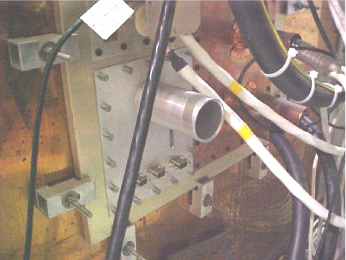
Attach the cable from box #3 (Avotec part number 758620) to one of the 9-pin filters at the sub-panel (see Illustration 14).
Insert the other end of the cable from step 3 into the back of the Cedrus Lumina Control Unit (see Illustration 15).
Illustration 14: Sub-Panel With Cable Installed
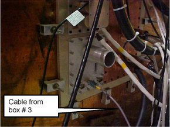
Illustration 15: Cedrus Lumina Controller with cable installed
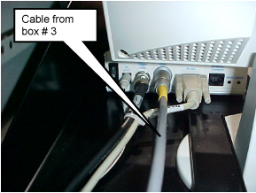
Attach the cable from box #2 to the other side of the 9-pin filter inside the magnet room at the sub-panel.
Attach the other side of the cable from box #2 to the OTEC unit inside the magnet room (see Illustration 16).
Illustration 16: OTEC Unit and Response Pads
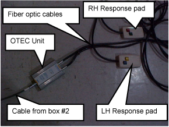
Remove the front cover of System Cabinet. Install cable (2394034-8) on J15 on Master Exciter board (part # 2281038). See Illustration 17.
Using the screw-lock connectors (46-265067P1), mount the female end of the Y-cable to an open DB-9 access hole from inside the rear panel at the bottom of the System Cabinet.
Illustration 17: J15 location on Master Exciter Board
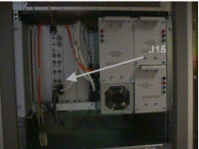
Open rear of System Cabinet and check for an existing cable on J31 on Tyme II board (see Illustration 18):
If cable does not exist, connect the Y-cable (2394034-8) to J31 and do not connect BNC end of Y-cable (cover the end of the BNC cable with electrical tape).
If cable does exist, remove cable and connect Y-cable to J31 of Tyme II and J1 to TNS. SeeIllustration 16 andIllustration 17 for locations of J31 and J1.
J1 (see Illustration 18).
Using the screw-lock connectors (46-265067P1), mount the female end of the Y-cable to an open DB-9 access hole from inside the rear panel at the bottom of the System Cabinet.
Illustration 18: Tyme and TNF connections
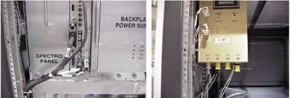
Find the long DB-9 cable and the long 3 prong power strip cable located at the bottom of the BrainWaveHW Lite cabinet (see Illustration 19). Unroll and route these two cables to the System Cabinet.
Remove the base access panel at the rear of System Cabinet. Route the cabinet Power Strip cable through J22 panel cutout (Illustration 20). Plug power cord into an open 15A outlet. If J22 is full, use other methods to attach power cable to System Cabinet.
Reinstall access panel to System Cabinet I/F.
| NOTE: | Other uses of the 15A outlets are non-standard and should be evaluated for overall demand. The BrainWave option requires approximately 10A (steady state - assume 15A power-up demand). If there are other pre-existing users of 15A power, and all the 20A outlets are unused, the BrainWave option may be plugged into an open 20A outlet instead. |
Insert the other cable that was routed to the system cabinet into the DB-9 access hole in the rear panel of the system cabinet. This is the same access hole which was chosen for the female end of the “Y” cable in step two above (see Illustration 21). In Illustration 21, J60 was chosen.
Illustration 19: Cables at the Bottom of the BrainWaveHW Lite Cabinet

Illustration 20: System Cabinet Rear Access Panel

Illustration 21: System Cabinet Rear Access Panel
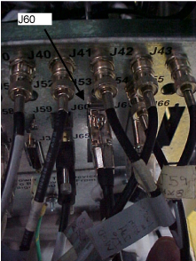
Run provided Network cable between Stimulus PC Network output and System Cabinet Hub, located at the top of the System Cabinet.
The cable should not be connected at this time, it will be connected after the software load. SeeIllustration 22 and Illustration 23.
Illustration 22: System Cabinet Network Connection

Illustration 23: Stimulus PC Network Connection
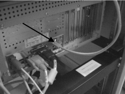
Run provided network cable between the Stimulus PC, network output, and System Cabinet network switch.
Connect Ethernet cable to any open port on the network switch. See Illustration 24.
Illustration 24: Ethernet Cable Ports in Release 14x
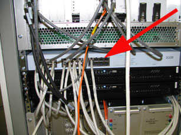
Connect one end of Ethernet cable to the Ethernet hub that is inside of the Duplex. See Illustration 25.
Route the other end of the Ethernet cable to the Stimulus PC. See Illustration 23. Note, the cable should not be connected at this time. It will be connected after the software load.
Illustration 25: Duplex Network Connection
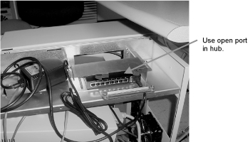
Press the Response Pad buttons in the magnet room, and have an independent observer at the BrainWave Cabinet observe the R/G/B/Y LEDs on the Response Interface box respond accordingly. If not, check that power is reaching the Response Interface box from the cabinet power strip. Also check that the response fiber optic cable is properly connected at the Response Interface box and the Response Pad assembly, as well as at the mating connection. See Illustration 27. This will verify continuity between response pad and controller. If LEDs do not light, check cabling between response pad in magnet room and controller in Brainwave cabinet.
Open Windows Explorer. Navigate to C:\Program Files\Sensor Systems\NeuroActivator 1.050W. Double-click commtest.exe.
A window will appear. Press the four response pad buttons in the magnet room. The following numerical values should appear
Blue: number 49
Yellow: number 50
Green: number 51
Red: number 52
This verifies communication from response pad in magnet room, through controller box, then to Stimulus PC. If there is no response on the PC, and Section 4.1, Step 1 is fine, check cabling between Control Box and PC.
Open Windows Explorer. Navigate to C:\Program Files\Sensor Systems\NeuroActivator 1.050W. Double-click commtest.exe.
A window will appear.
Set up for an FMRI scan using the following parameters:
Patient Position: Supine
Patient Entry : Head first
Coil: Standard Head coil
Plane: Axial plane
Mode: 2D
Pulse Sequence: Gradient Echo EPI
Select fMRI imaging option.
Click on the fMRI Screen (see Illustration 28) in the middle of the monitor and enter the parameters noted in Illustration 26. Select [Accept] when done.
Illustration 26: 11.x and 12.x fMRI Parameters
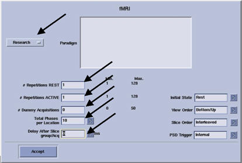
Click [Auto Pre-Scan]. When the pre-scan is complete, click [Scan]. Scan Time marks the time remaining in the scan.
After the scan is complete, check the output from the communication test. You should see:
A new pulse received number is 53
This verifies communication between the System Cabinet and the Stimulus PC.
The outputs from the Response Pads and the system trigger from the System Cabinet are routed through the Response System Electronics and then to the serial port of the Stimulus PC.
If the BrainWave hardware does not receive the trigger from the System Cabinet, the paradigms will not go past the ready state.
Run the Serial Port Test (commtest.exe) on the Stimulus PC and check the inputs from the Response Pads (have someone push the buttons) and the system trigger (run a test BrainWave acquisition from the AW to start the trigger).
Signals from Response Pads will be numbers 49-52.
Signal from the system trigger will be number 53.
The Response Electronics may get hung up, try cycling the power.
If response or trigger signals are not present, trace the signals using the interconnect diagram back through the Response Electronics.
| NOTE: | To stop the NeuroActivator and keep the screen from constantly
displaying the 4 color boxes, right click on the NeuroActivator icon
on the Start bar and select [Exit]. To re-start
NeuroActivator, move the mouse to the lower left corner of the screen,
click Start
→
Programs
→
NeuroActivator
→
NeuroActivator
- Clinical. The signals are sent through pins 4 and 9 of the DB-9 connector on J31 of the Tyme II board. |
Press the Response Pad buttons in the magnet room, and have an independent observer at the BrainWave Cabinet observe the R/G/B/Y LEDs on the Response Interface box respond accordingly. If not, check that power is reaching the Response Interface box from the cabinet power strip. Also check that the response fiber optic cable is properly connected at the Response Interface box and the Response Pad assembly, as well as at the mating connection. See Illustration 27. This will verify continuity between response pad and controller. If LEDs do not light, check cabling between response pad in magnet room and controller in BrainWave cabinet.
Illustration 27: Generating Responses from the Lumina Controller
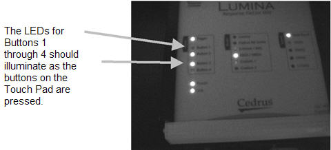
Finally, check the serial cable from the Lumina Controller to the Stimulus PC. The Lumina Controller Box should be connected with a cable to a serial port (DB-9) on the right side of the Stimulus PC's motherboard. If the cable is attached to the expansion slot on the PC labeled serial, move it to the proper location.
Move the mouse to the lower left corner of the Stimulus PC screen. Click Start → Run.
From the command line window, type hypertrm.exe and <Enter>.
If a HyperTerminal communication link has been set up, click [Cancel], then select the link by clicking File, then Open, then double-click on [Cedrus_Test]. Proceed to step 6.
If a HyperTerminal communication link has not been set up for this site, Type cedrus_test in the Name field and click [OK]. Proceed with Steps 4 and 5.
In the Connect Using field, select COM1. Click [OK].
In Port Settings, use these parameters:
Bits per Second: 9600
Data Bits: 8 (default)
Parity: None (default)
Stop Bits: 1 (default)
Flow Control: None
Click [OK]. A Connected message should appear in the lower left corner of the screen.
Press the 4 Response Pad buttons, and verify that they display these values:
Left Pad
Blue: 1
Yellow: 2
Right Pad
Green: 3
Red: 4
When exiting HyperTerminal, click [Yes] when asked to save the connection.
Set up for an fMRI scan using the following parameters:
New Patient
Patient ID: geservice
Weight: 100 lbs
Patient Position: Supine
Patient Entry: Head first
Coil: Standard Head coil (under Head/Neck)
Plane: Axial
Pulse Sequence Family: Echo Planar Imaging
Pulse Sequence: Gradient Echo EPI
Select [fMRI] imaging option.
Fill in the Acquisition Timing and Scan Timing sections as shown in Illustration 28. The TR settings under Scan Timing can be either 1100 or 2000.
Illustration 28: Screen

Click [fMRI Screen] under Additional Parameters.Illustration 29 appears. Select the [Research Mode] paradigm. Click [Accept] and return to the setup screen.
Illustration 29: fMRI Parameters

Enter the Scanning Range parameters shown in Illustration 28.
Click [Save Series].
Click [Auto Pre-Scan]. When the pre-scan is complete, click [Scan]. Scan Time marks the time remaining in the scan.
When the scan is complete, check the output from the communication test. You should see:
A new pulse received number is 5
This verifies communication between the System Cabinet and the Stimulus PC.
The outputs from the Response Pads and the system trigger from the System Cabinet are routed through the Response System Electronics and then to the serial port of the Stimulus PC.
If the BrainWave hardware does not receive the trigger from the System Cabinet, the paradigms will not go past the ready state. See Section 4.3, “Response Pad Check.”
When upgrading from pre-excite to excite configuration, the following changes are needed.
Remove the data cable from the System Cabinet Tyme board, J31.
Install data cable to J15 on Master Exciter board (part #2281038). See Illustration 30.
Install provided Network cable between Stimulus PC Network output and System Cabinet Hub, located at the top of the System Cabinet. Note, the cable should not be connected at this time, it will be connected after the software load. See Illustration 31.
Illustration 30: J15 location on Master Exciter Board
Illustration 31: System Cabinet network connection
Table 8: Stimulus PC Network Configuration
| Advanced Users | New Users | |
| Exit NeuroActivator | 1. Move mouse to dismiss the flashing square. Right click on the NeuroActivator icon (image of the brain in the lower right hand corner of the task bar) and click exit. | |
| Start → Settings → Control Panel → Network (double-click). | 2. Launch the WinNT Network configuration utility. Go to Start → Control Panel → Network Connection. | |
| Protocols | 3. Select the Properties tab. | |
| Select TCP/IP | 4. Select the TCP/IP protocol. | |
| Properties | 5. Select Use the following IP Address. | |
| IP Address: gestimpc IP addr | 6. From the tools desktop of the scanner workstation start a “C Shell.” Using the more /etc/hostscommand, record the IP addresses for gestimpc and <site_hostname>-tgate (used later). Enter the IP address assigned to gestimpcin the hosts file and netmask (e.g. 255.255.252.0) information for the Stimulus PC. | |
| Subnet Mask: 255.255.252.0 | ||
| Default Gateway: <leave blank> | ||
| [OK] | Click [OK] in the TCP/IP Properties dialog box. | |
| [OK] | Click [OK] in the Network dialog box. |
| NOTE: | When upgrading BrainWave Lite hardware from any version to 14x, the PC must be replaced via Catalog M3335MK, BrainWave Stim PC HDX UPG. |
| ||||
| The PC comes pre-loaded with software. There is no need to reload software. Perform network configuration only. | ||||
Power down the existing BrainWave Stimulus PC.
Remove the power cable from the Stimulus PC.
Remove the following cables from the Stimulus PC.
Network cable
Serial cable
Video Output cable
Mouse and Keyboard cables
Physically remove the original Stimulus PC from the BrainWave Cabinet.
Install the new or replacement in the BrainWave Cabinet in the same location.
Connect the cables as shown in Illustration 32. All cables that route to the Stimulus PC will route to the original connection, except for the Network Cable. The Network Cable will route between the Stimulus PC and Network Switch, which is located in the RFS Cabinet or System Cabinet. Refer toSection 3.3.7 for Ethernet cable connection.
Illustration 32: BrainWave Connections
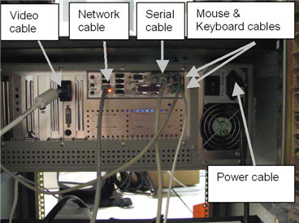
On the BrainWave Stimulus PC, move mouse to the lower left corner of the display. Go to Start → Control Panel → Network Connections.
Double-click [Local Area Connection].
Click [Properties].
Double-click [Internet Protocol (TCP/IP).]
Select Use the following IP Address.
On the Signa host, note the IP address of the gestimpc by doing the following:
Open a C shell.
Type cd /etc and <Enter>.
Type more hosts and <Enter>.
Note the IP address of the gestimpc.
Enter the gestimpc IP address (usually 10.0.1.9.
Enter Subnet Mask of 255.255.252.0.
Enter Default Gateway of 10.0.1.1.
Click [OK].
Click [OK].
Click [Close].
Open a C shell on the host. Type cd /usr/g/brainwave/config and <Enter.>
Type more BrainWave.config and <Enter>.
Verify that the first line of BrainWave.config contains the address of the Stimulus PC. It is usually 10.0.1.9. If the file does not contain the address of the Stimulus PC, use gedit to modify the BrainWave.config file.
Complete the steps inSection 4.3 and Section 4.4.
| NOTE: | DO NOT CONNECT THE NETWORK CABLE AT THIS TIME. During the BrainWaveHW Lite Software Loading procedure, this cable will be connected from the Stimulus PC to either the Network Hub at the top of the System Cabinet (Excite and LX installations) or the Network Connection in the Operator Workspace Area (Pre-LX/AW installations). |
Illustration 33: Interconnect Diagram
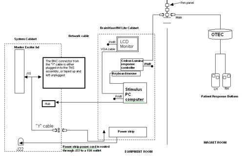